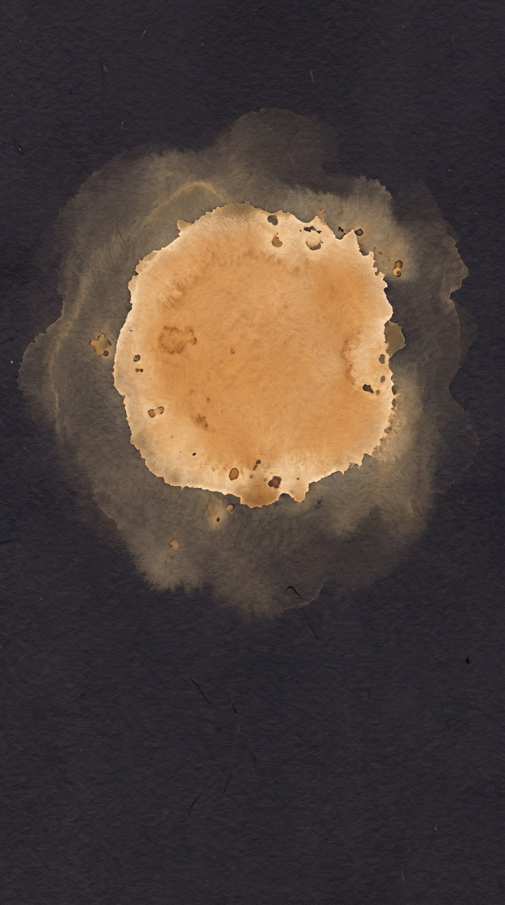
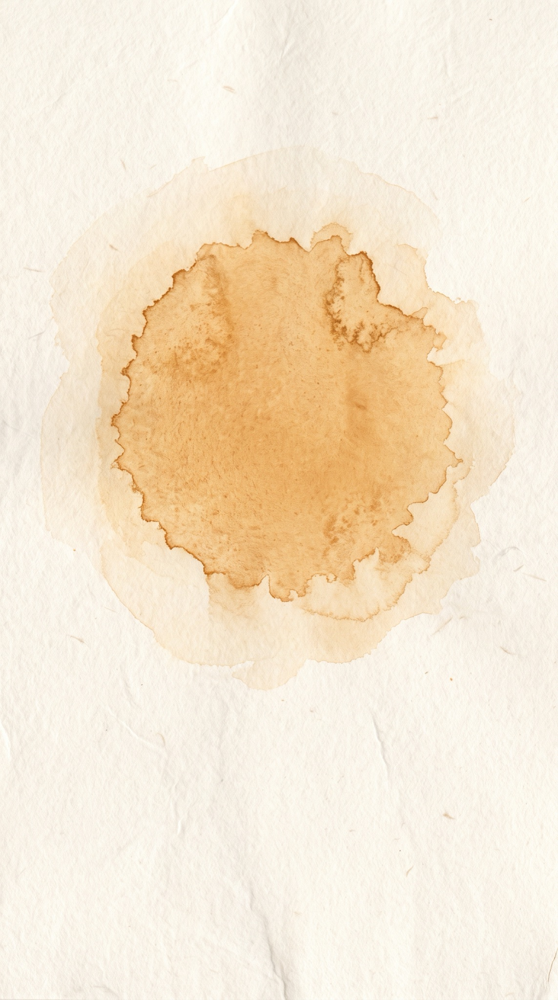
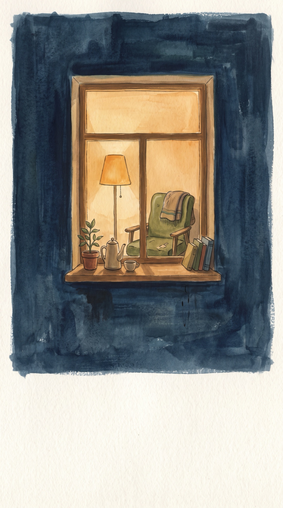
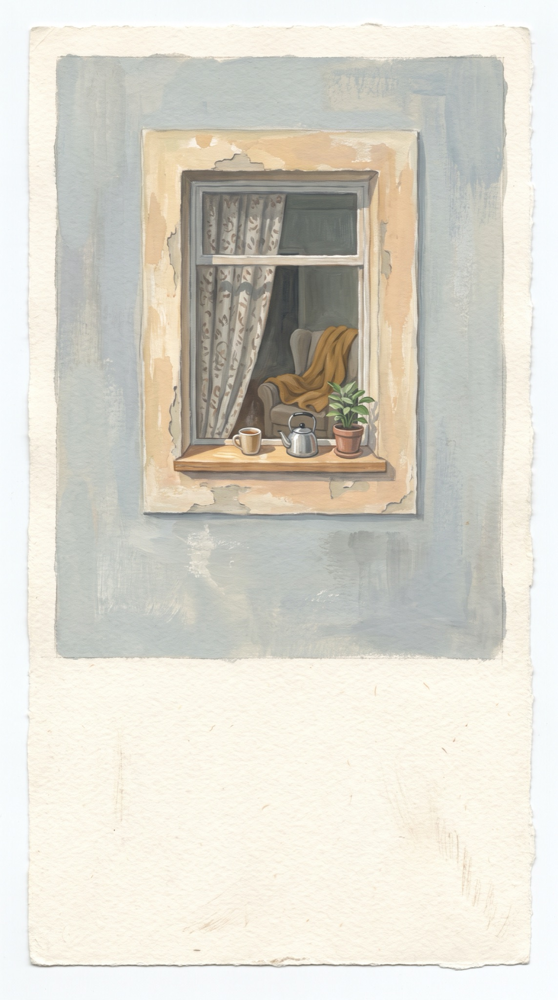
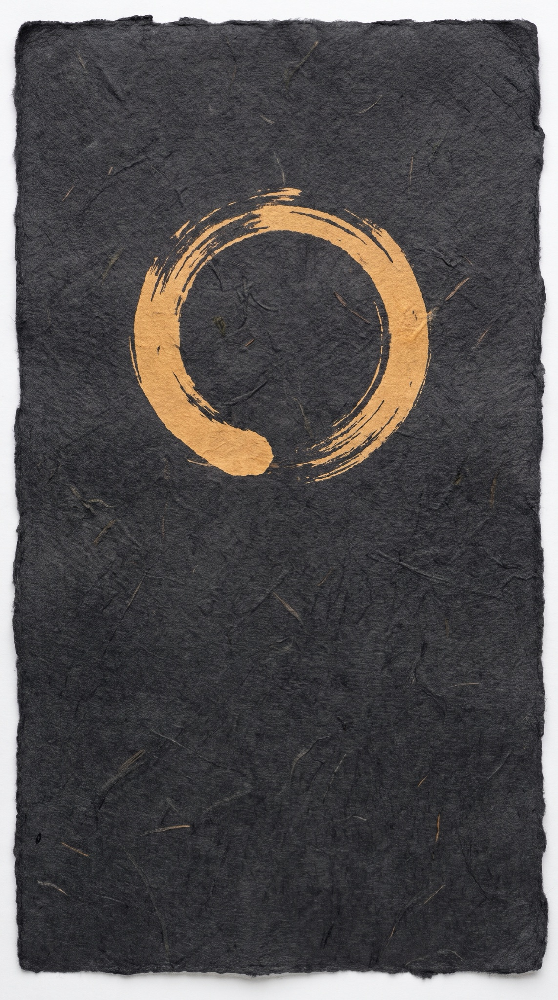
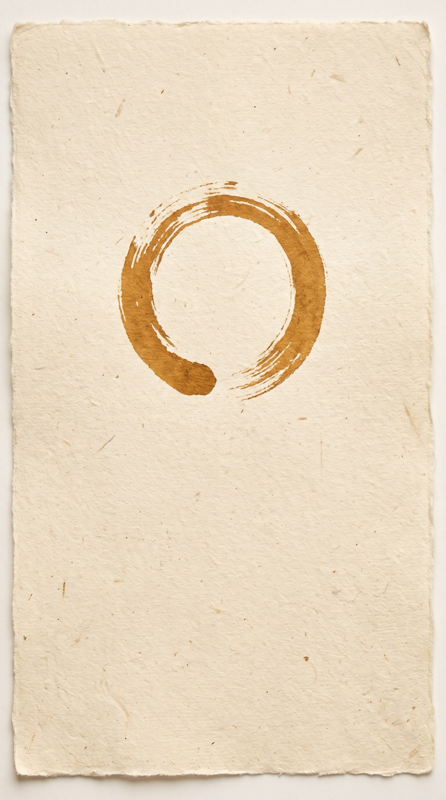
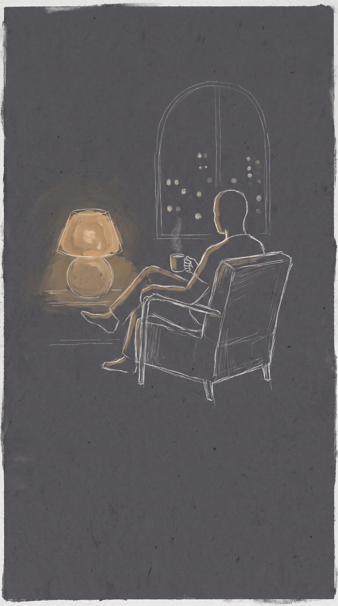
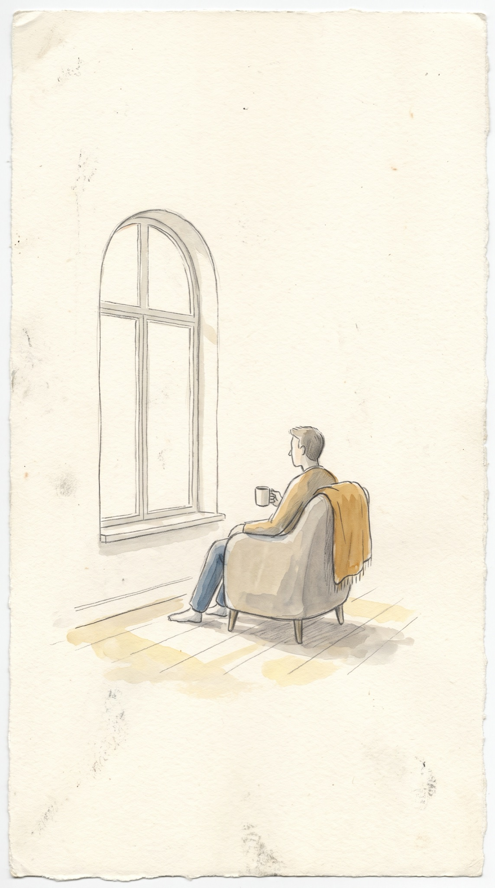

Same example colour in all of them (warm ochre), so only the idea differs. Night on the left, day on the right.
His colour as watercolour on paper. Abstract, closest to what we had. It would spread a little when he talks.

21:40слушаю
9:15слушаюA painted window of his room: his lamp, his chair, his kettle. Shows that he has a life. The lamp would brighten when he speaks.

21:40слушаю
9:15слушаюA brush circle in his colour, drawn by hand, and his words in a serif under it. A circle like the orb, but made by a person.

21:40говорюНу, рассказывай — как прошёл день?
9:15говорюДоброе утро. Как спалось?Him, drawn simply, with no face. Warmest, but every friend would need his own drawing, and a man alone by a window can look lonely himself.

21:40слушаю
9:15слушаюMade with Nano Banana Pro, about $1.07 for all eight. Motion comes after you pick: the paint spreading, the lamp brightening, the circle being drawn as he speaks.